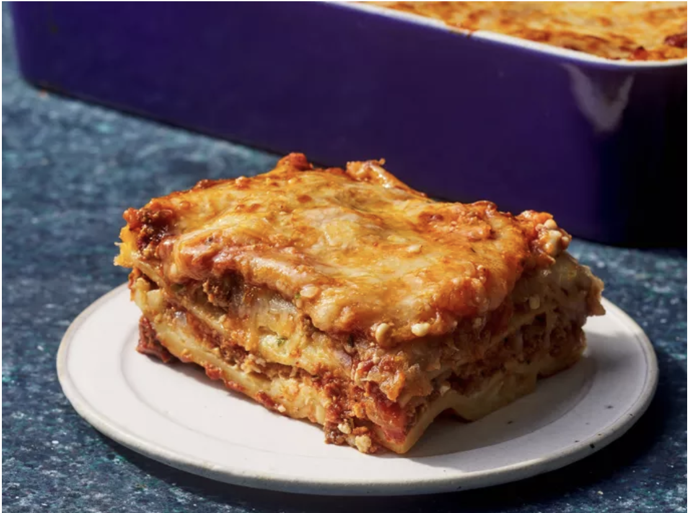

Lasagna

Description
Homemade lasagna isn't as hard to make as it seems. Don't be intimidated by all the layers of delicious Italian flavor — try this homemade lasagna recipe today!
Ingredients
- ½ pound ground pork
- ½ pound lean ground beef
- ½ cup minced onion
Steps
- Gather all ingredients.
- Combine pork and ground beef in a large, deep skillet over medium-high heat; cook and stir until browned and crumbly, 5 to 7 minutes.
- Add onion and cook until translucent, about 5 minutes.
Home